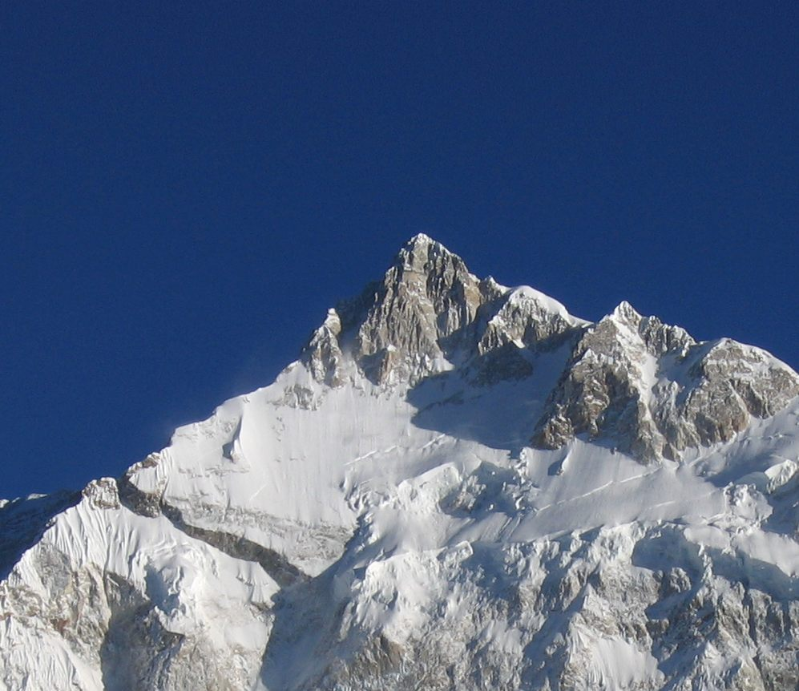

INTRODUCTION
Pelling is sleepy little town in the Northern Indian state of Sikkim. It is fast emerging as the second biggest tourist destination in the state after Gangtok. The town is famous for it's magnificent views of the snow-capped mountains of Kanchenjunga and it has a rich history, natural environment and local culture. The region is steeped in Buddhist culture and there are several interesting monasteries around it. Pemayangtse monastery is less than a kilometre from Pelling, while a 40 minute walk on the hill opposite the monastery takes you to Sangacholing monastery built in 1697, one of the first in the state. Pelling’s serene environment and picturesque setting is perfect for nice nature walks and small treks. [Source].
The map below is a presentation of the important tourist locations reachable from Pelling. Click on a placemark to learn more about each destination.
THE VIEW FROM PELLING
Situated at an altitude of 1,900 m (6,250 ft), Pelling offers good views of the surrounding mountain ranges including the Rathong, Kabru North and Kabru South, Talung and of course the majestic Kangchenjunga. The excellent views has caused a boom in the local tourism industry. The mountain range looks particularly serene at dawn when the peaks are lit up in golden hues. [Source].
The image below gives a good idea of the major peaks visible from Pelling looking Northwest.
KANGCHENJUNGA
The most famous peak visible from Pelling is Kangchenjunga (8586m). It is the third highest mountain in the world, and lies partly in Nepal. Three of the five peaks – Main, Central and South – are on the border between North Sikkim in India and Nepal. It is called Five Treasures of Snow after its five high peaks, and has always been worshipped by the people of Darjeeling and Sikkim. Kangchenjunga was first climbed on 25 May 1955 by Joe Brown and George Band, who were part of a British expedition. They stopped short of the summit as per the promise given to the Chogyal that the top of the mountain would remain inviolate. Source: [a] [b]
![[b]](https://upload.wikimedia.org/wikipedia/commons/0/0a/Kangch-Goechala.jpg){kind=link}
DEVELOPMENT HIGHLIGHTS
1. Created new icons for both the maps. 2. Positioned text as well as markers in the static map. 3. Used CSS styling within the infowindow content boxes. 4. Used map.fitBounds() to automatically fit all the markers within the map boundary 5. Most of the photos are original content.